Quick start: your first measurement¶
This page takes you from an empty program to a finished measurement, clicking through the GUI. It takes about fifteen minutes. You need no hardware: easyMeasure comes with simulated instruments that behave like real ones, connected to a simulated graphene device.
The story. You have a graphene Hall bar with a back gate. You want the classic first measurement: the four-probe resistance \(R_{xx}\) as a function of the back-gate voltage. It shows a peak, the Dirac peak, where the carrier density crosses zero. In the lab you would wire it up like this:
| role | real instrument | simulated stand-in (this page) |
|---|---|---|
| back-gate voltage, and measure the gate leakage current | a source-measure unit, e.g. Keithley 2400 (keithley2400, GPIB) |
sim_smu |
| four-probe voltage; its 10 mV sine output drives about 10 nA through a 1 MΩ series resistor and the sample | a lock-in amplifier, e.g. SR830 (sr830, GPIB) |
sim_lockin with sample = graphene |
The steps are the same with the real instruments. Only the driver and the address differ.
1. Start easyMeasure¶
After installing, start the GUI. It starts the backend too:
On Windows you can also double-click run_gui.bat.
easyMeasure runs as two programs:
- the backend, which talks to the instruments and runs the measurements;
- the GUI (the window), which is only a view of the backend.
You can close the window at any time; a running measurement goes on. A small tray icon shows what the backend is doing.
The first time, the GUI asks where to save your data and which PowerPoint file to append a summary slide to after every measurement. Leave the PowerPoint file empty if you don't want slides. Both can be changed later in File → Settings.
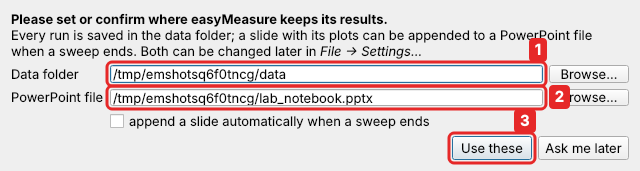
- Data folder: every measurement is saved here, in one sub-folder per day.
- PowerPoint file: optional; a slide with plots is added after each measurement.
- Use these.
2. The window¶
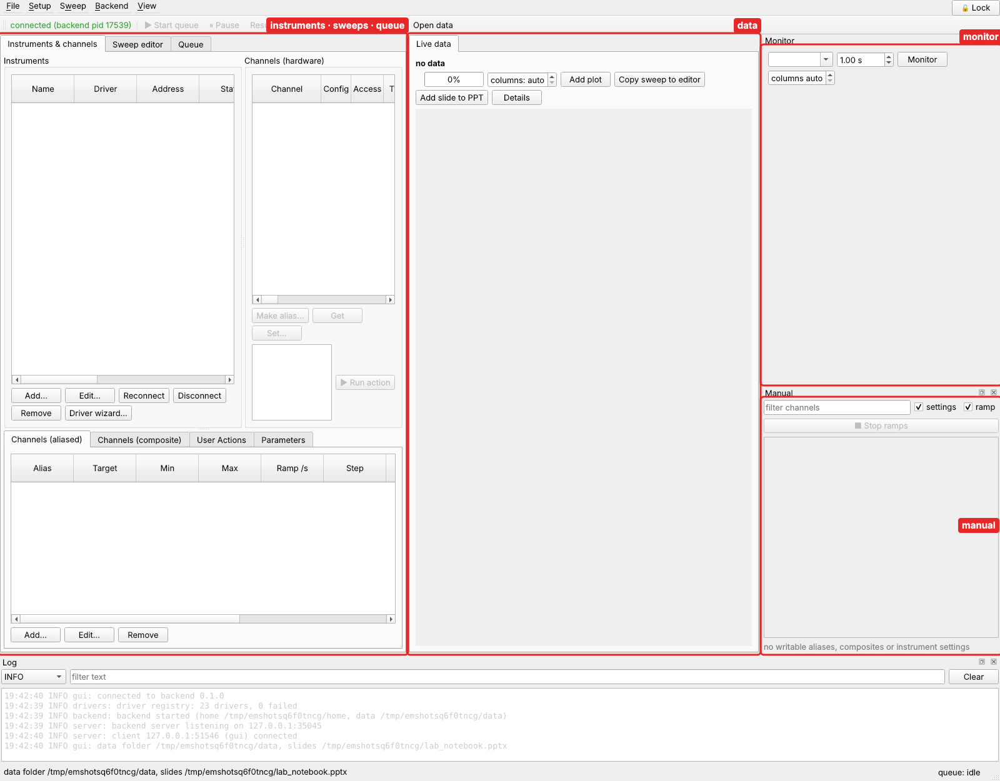
- Left: three tabs.
- Instruments & channels: which instruments you have, and what you call their channels.
- Sweep editor: where you describe a measurement.
- Queue: what is running, and what ran before.
- Middle: the data, with Live data for the running measurement and one tab for each file you open.
- Right: the Monitor, which shows values that are read continuously, and the Manual panel, which sets values by hand.
- Bottom: the log.
3. Add the instruments¶
On the Instruments & channels tab, click Add… under Instruments:
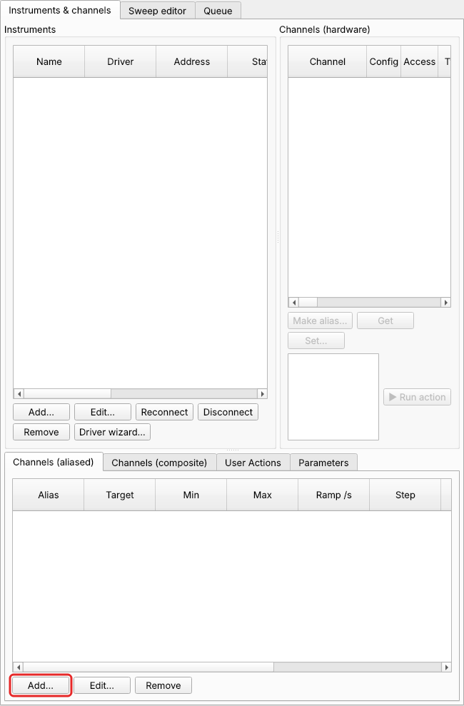
The gate source. Fill in the dialog:
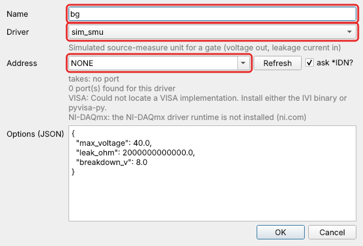
- Name: a short name you choose.
bgfor back gate. - Driver: the kind of instrument.
sim_smuis a simulated source-measure unit. For a real Keithley 2400 you would pickkeithley2400. See the full list of supported instruments. - Address: where the instrument is connected. Simulated instruments need no
port:
NONE. For real instruments the list offers every port and device found on the computer, for exampleGPIB0::24::INSTR, with the ones that answer as this kind of instrument marked ✓.
Click OK. The instrument appears in the list as connected.
The lock-in. Click Add… again. Name lockin, driver sim_lockin, address
NONE. In Options, change "sample": "dot" to "sample": "graphene", so the
simulated lock-in measures the graphene device:
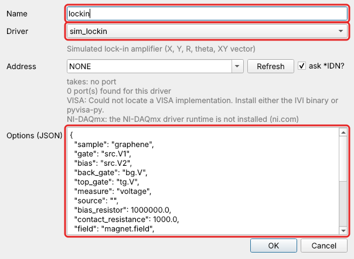
Options are settings of the instrument that you set once. Every driver has its own options, listed in the driver's reference page. Real instruments mostly need none.
4. Name the channels you care about¶
Select an instrument on the left. Its channels appear in the middle list. bg
has voltage (what it sources), current (what it measures), and two settings
marked ⚙: output and compliance.
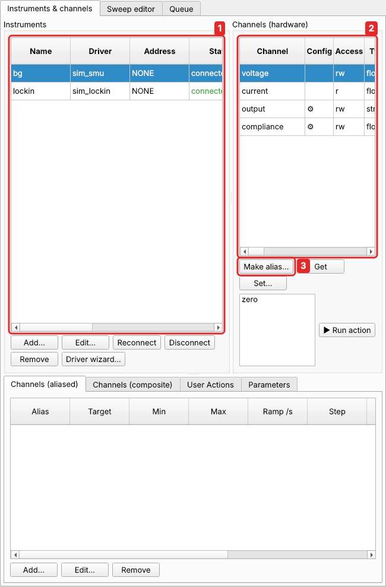
You won't use bg.voltage directly. Instead you give it a name, an alias, which
also carries its protection: how far and how fast it may ever be driven. A gate
dielectric breaks if the voltage is too high, and a fast jump can damage the sample.
easyMeasure checks these limits for every value it sets, including every point of a
measurement before the measurement starts.
- Select
bg. - Select
voltage. - Click Make alias….
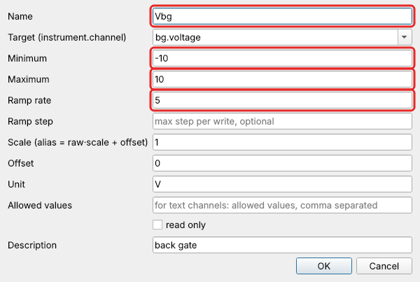
- Name
Vbg. - Minimum −10 and Maximum 10 (V): nothing will ever set the gate beyond ±10 V.
- Ramp rate 5 (V/s): every change of the gate is a smooth ramp at most this fast, never a jump.
- Unit V, and a Description if you like.
Do the same for bg.current, naming it Ileak with unit A. It is the gate
leakage current, worth watching.
The resistance. The lock-in measures a voltage, \(V_{xx}\). With 10 nA flowing,
\(R_{xx} = V_{xx} / 10\,\text{nA} = V_{xx} \times 10^8\). An alias can do this
conversion for you. Select lockin, then its channel X, then Make alias…:
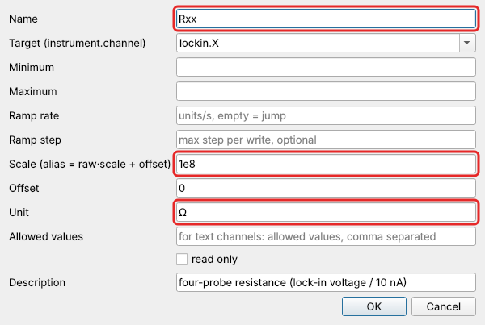
- Name
Rxx. - Scale
1e8, since the alias value is the raw value × scale. - Unit
Ω.
This assumes the current stays at 10 nA, which holds while the sample resistance is small compared with the 1 MΩ series resistor. Tutorial 2 measures the current with a second lock-in and computes \(R_{xx} = V_{xx}/I\) exactly.
Now you have three aliases:
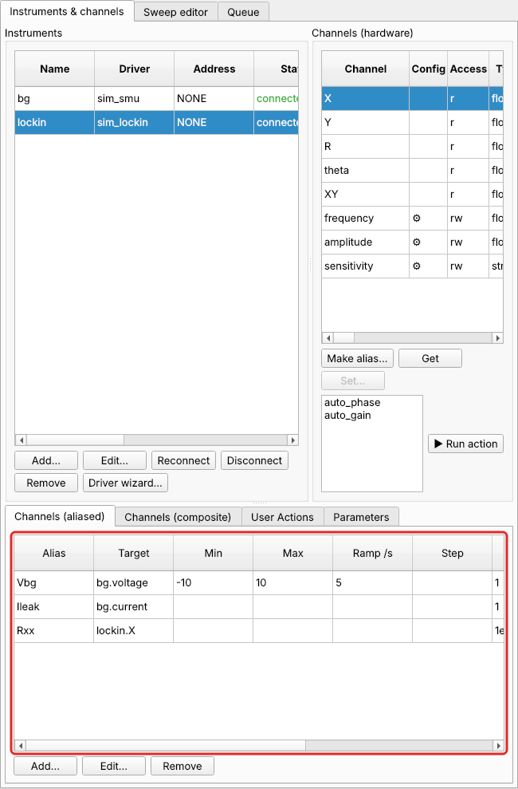
5. Try it by hand¶
Before measuring, check that everything responds. The Manual panel (right) lists
every channel you can set. Type 2 into Vbg (1) and press Enter: the gate ramps to
2 V at 5 V/s. To watch the resistance, choose Rxx at the top of the Monitor
and click Monitor (2):
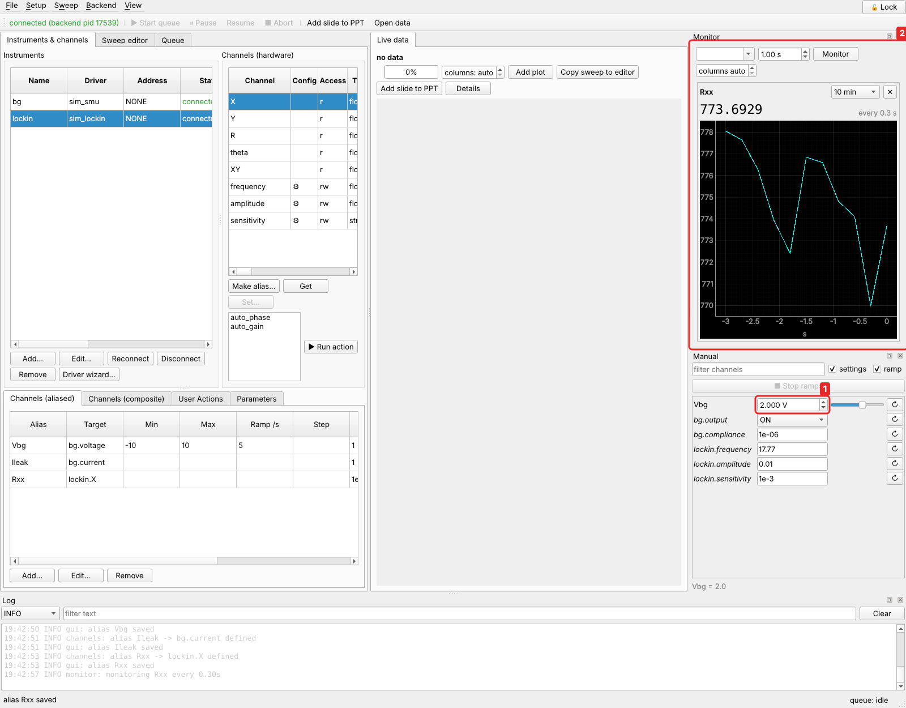
Set Vbg back to 0 when you are done.
6. Describe the measurement: a sweep¶
A measurement in easyMeasure is a sweep: some channels are stepped through values, and at every step others are recorded. Open the Sweep editor tab:
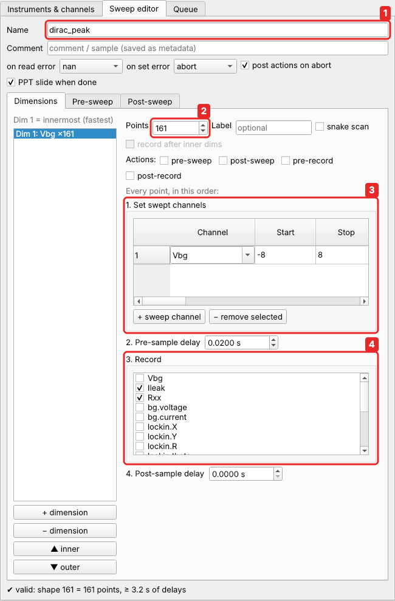
- Name:
dirac_peak. It goes into the file name. - Points:
161. - Set swept channels: click + sweep channel, choose
Vbg, Start-8, Stop8. That gives 161 points, 0.1 V apart. - Record: tick
RxxandIleak. Before recording, the pre-sample delay of 0.02 s gives the lock-in time to settle after each step. With a real lock-in, use 3 to 5 time constants. In the Sweep menu (menu bar, at the top of the window):
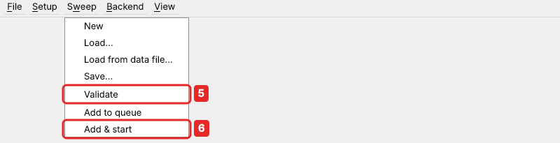
- Validate: easyMeasure computes every point and checks it against the limits.
The status line of the editor says
✔ valid: shape 161 = 161 points. - Add & start.
Also worth a look: the Post-sweep tab. Add a constant there, Vbg = 0, and the
gate goes back to 0 V when the measurement ends, even if it ends with an error or you
abort it. Sweep → Save… stores the sweep as a file for next time. This one is
examples/graphene_dirac.json (Sweep → Load…).
7. Watch it run¶
The Live data tab shows the measurement as it comes in. There is one plot for each recorded channel, a progress bar, and the estimated time left:
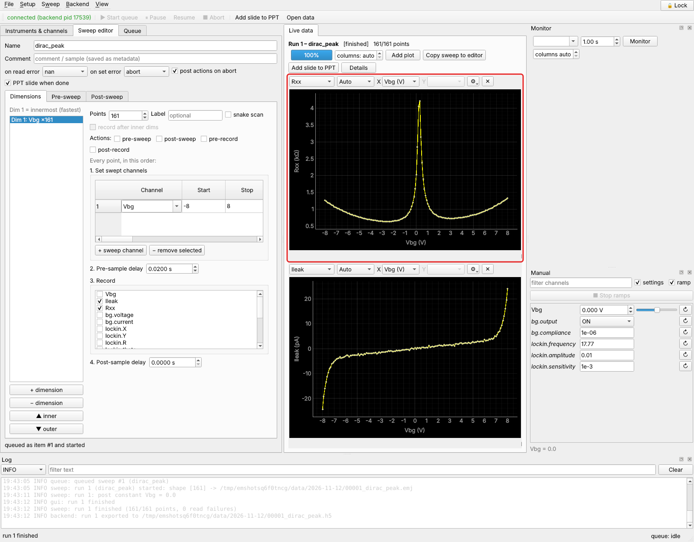
There's the Dirac peak, at \(V_{bg} \approx 0.3\) V where the carrier density is zero, and the leakage current stays in the picoampere range. Things to try:
- the X box chooses the horizontal axis, and ⚙ the colours and options;
- move the mouse over a plot to read values;
- Add plot shows another channel, or the same one twice;
- the toolbar's Pause and Abort work at any point. Abort still runs the post-sweep phase, so the gate returns to 0.
Close the window during a measurement and start it again: the measurement never stopped, and the live view picks it up where it is.
8. Your data¶
When the sweep ends, the Queue tab lists it in the history:
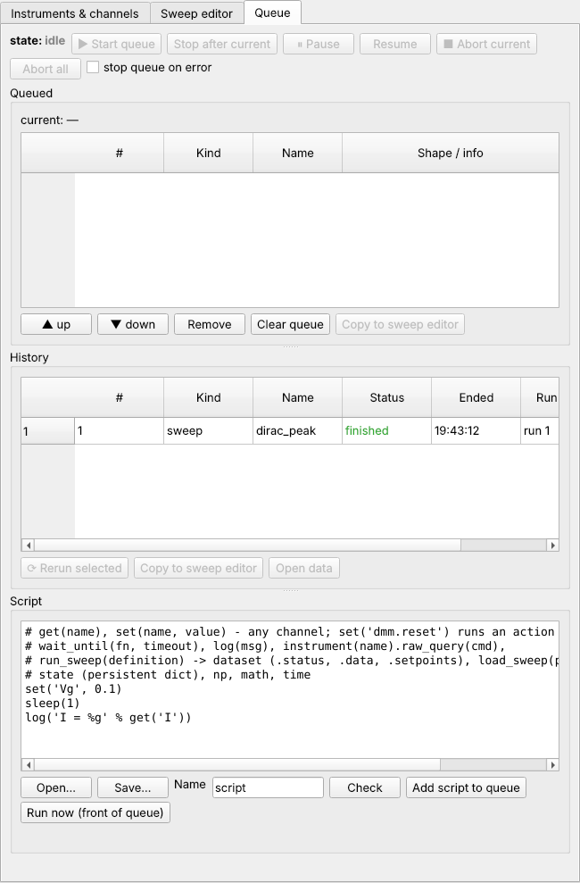
- The data is in your data folder, e.g.
data/2026-11-11/00001_dirac_peak.emj. The file is written while the measurement runs, so it survives a crash or a power cut. An HDF5 copy (.h5) is written next to it at the end. - Open data (or File → Open data file…) opens it in a new tab with the same plots.
- If you set a PowerPoint file, a slide with the plots and a summary was appended.
- Loading the data in Python, or in any program that reads HDF5: see Data files.
9. Save your setup¶
Instruments, aliases and everything else you defined form your setup. easyMeasure
saves it automatically after every change and restores it when it starts again. To
keep a copy, or to use it on another computer, use Setup → Save setup… in the menu
bar. The setup of this whole tutorial series is examples/graphene_setup.json.
Next¶
- Tutorial 1: a Landau fan: a 2-D map of gate voltage and magnetic field, with a magnet that takes time to ramp.
- Tutorial 2: rotated gate sweeps: sweep carrier density and displacement field with two gates, using a composite channel.
- Tutorial 3: stop at a threshold: end a measurement automatically when the leakage current gets too high.
- Tutorial 4: a VNA power sweep: spectra as a function of power and field; 3-D data.
- Key ideas: the handful of terms everything else builds on.